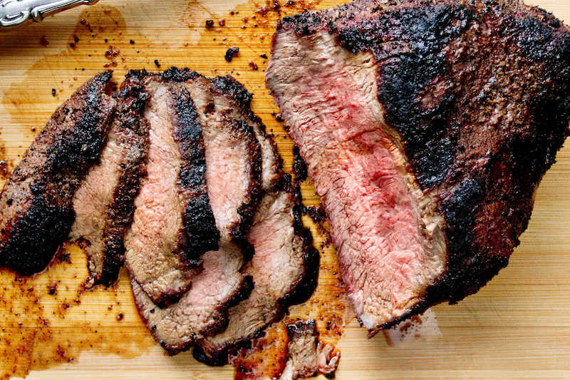
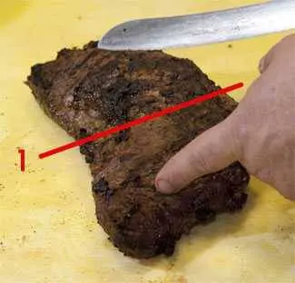
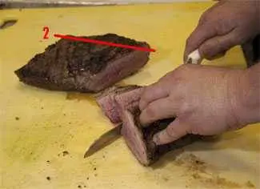

Santa Maria Tri-Tip

In the beautiful Central Coast town of Santa Maria, there are big ranches, plenty of cattle, and an amazing cut of beef that was once unique to this area — the tri-tip. A specialty of the area, this recipe for grilled tri-tip is sure to impress your guests.
Originally settled by Mexican cowboys called vaqueros, Santa Maria has an international reputation for this local specialty, the unique grill they invented to cook it, and the clever way they carve it to make it so tender.
The story goes that in the 1950s a Safeway butcher named Bob Schutz was overstocked on ground beef and stew meat, so he took a curved muscle from the bottom sirloin usually destined for chopping or grinding, and put it on his store’s rotisserie. He and his staff were shocked at how flavorful and tender it was. He called it tri-tip and started promoting it as a barbecue meat. Nowadays, when you say barbecue in this beautiful slice of California, with beaches and mountains, you are talking tri-tip, not ribs or brisket.
Tri-tip is a crescent-shaped muscle from the bottom sirloin just in front of the hip. It is available in every grocery and butcher shop in Southern California, but it is hard to find elsewhere. If you don’t live on the left bank, your butcher should be able to special order it.
It has big beefy flavor, it is very lean, so it can be on the chewy side if you don’t cook and slice it properly. But cook and slice it the way they do in Santa Maria, and you can have a piece almost as tender, and every bit as juicy as prime rib. I call it the Poor Man’s Filet Mignon.
Ingredients
Tri-Tip
- 3-4lb Tri-tip Roast
- 1 1/2 teaspoons Morton's Coarse Kosher Salt
about 1/2 teaspoobn peer pound of meat
- 1/2 teaspoon coarsely ground black pepper
- 1 teaspoon garlic powder
- 1 teaspoon paprika
- Two to three hours before cooking, pat the meat dry with paper towels and sprinkle it with salt to dry brine.
- The amount of salt should be no more than if you were serving it cooked
- Set-up your grill for two-zone cooking with one side scorching hot and the other side at about 225&2109 to 250&2109
- Just before cooking, sprinkle the spices in roughly equal amounts and rub into the meat. Don't worry about over-seasoning. The thin sliced will only have a small lip of flavorful crust.
- Put the meat on the indirect side of the grill with the thick end closer to the heat, close the lid, and turn it every 20 minutes until the center hits 110$2109 to 115&2109.
- Move the meat to directly over the high heat for about 5 minutes per side, until it gets a nice even sear.
- Remove the meat when the center reaches 130&2109.
Carving
- Cut the muscle in half.

- Rotate each half and cut from tip to the cut end, across the grain, in 3/8" to 1/2" slices.

- Serve. Fan slices on a platter, pour the juices on top, and serve with grilled garlic bread to sop up the juices.